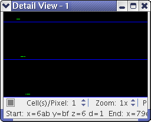
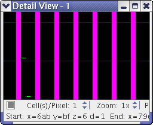
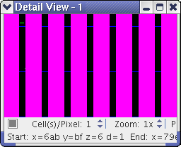

Using filters
The BFM Viewer lets you specify filter rules to highlight cells in the display that meet particular conditions. Each filter rule can consist of multiple conditions. All active rules are automatically applied to the Chip Overview tab as well as all detail views.
When the BFM Viewer filters the bit fail map displays, it applies all rules in the order in which they are listed in the Filters tab. All active filter rules are always applied to the loaded bit fail maps.
Applying a rule means evaluating all conditions of the rule. Only if all conditions are true for a given cell, the rule is considered to match. (In other word: If at least one condition of a rule evaluates to false for a cell, the rule does not match that cell.)
Each rule is applied to each cell, with three possible effects:
- If the rule matches, the effect depends on the type of rule:
- Exclude rule: The cell is covered by the filter and no longer visible if the filter is set to opaque.
- Include rule: The cell is uncovered and is always visible.
- If the rule does not match, there is no effect.
In other words, the display state of the cell remains as it was before the rule was applied.
The rules are applied in the order in which they appear in the Filters tab. If multiple rules match for a cell, the last one to be applied "wins". That is, if the last matching rule excludes the cell, the filter hides it - irrespective of the effects of any prior matching rules. Similarly, if the last matching rule includes a cell, it is not hidden.
Creating and editing filters is described in Creating and editing filter rules. Activating and deactivating rules is described in Activating and deactivating filter rules.
Displaying filters
The applied filters can be displayed in three ways:
- Hidden: The filter is not displayed at all, that is, there is no visual difference between excluded and included cells.
- Transparent: The filter is displayed as a transparent overlay. Excluded cells are tinted by this overlay but are still visible beneath it.
- Opaque: The filter is displayed as an opaque area. Cells excluded by the filter are completely hidden.
The color that is used for the transparent or opaque filter overlay is specified by the Filter Mask setting in the Colors tab.
Saving filters
All filter rules and conditions are discarded when you:
- Exit the BFM Viewer
- Start a new session
- Change the active device
If you want to keep a set of filter rules, you can save it to disk as a file and re-use it in later sessions. This is described in Saving and loading filter rules.
Example
Consider this bit fail map (detail view with one cell per pixel, fully zoomed in):

Applying a filter excluding all cells whose physical x-coordinates, when masked by 0x1F, are below 8 results in this display (with pink as the filter mask color):

Conversely, excluding all cells and then including cells with a physical x-coordinate smaller than 7 (when masked by 1F) results in this display:

Functional changes
- Introduced before SmarTest 6.3.2